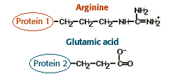
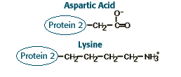
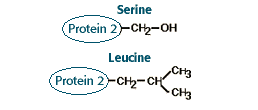

Large Molecules Problem Set
Problem 10 Tutorial: Protein-protein interactions
Tutorial to help answer the question
|
Proteins 1 and 2 interact strongly. A significant part of the interaction is between the amino acid side chains shown below.
|
| 
|
|
Assume that a mutation occurs in protein 2 that changes the amino acid shown above to one of the amino acids shown below.
|
| 
|

|
What change should disrupt the interaction between proteins 1 and 2 the most? the least?
Tutorial
Attractive force
|
The arginine amino acid side chain of protein 1 has a positive charge. The glutamic acid amino acid side chain of protein 2 has a negative charge. The most likely interaction between these two amino acids is an ionic bond, i.e. an attractive force between the positive and negative charge.
|
Most disruptive
|
If the amino acid of protein 2 were mutated to an amino acid with a positive charge, such as lysine, then the positive charges of the arginine of protein 1 and the lysine of protein 2 would repel each other. Lysine would be the most disruptive to protein-protein interaction.
|
Least disruptive
|
If the amino acid of protein 2 were mutated to another amino acid with a negative charge, such as aspartic acid, the positive charge of the arginine of protein 1 and the negative charge of aspartic acid of protein 2 might still form an ionic bond. Aspartic acid would be the least disruptive to protein-protein interaction.
|


 

The Biology Project
Department of Biochemistry and Molecular Biophysics
The University of Arizona
Revised: February 5, 2003
Contact the Development
Team
http://www.biology.arizona.edu
All contents copyright © 1996-2003.
All rights reserved.
|